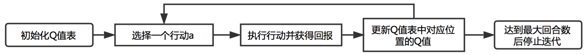
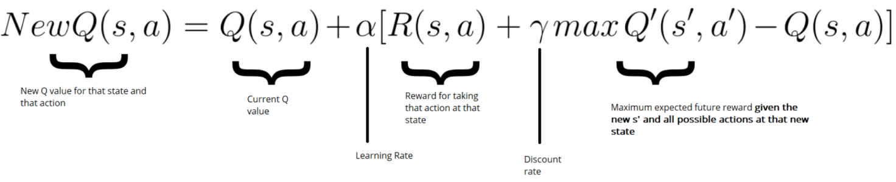
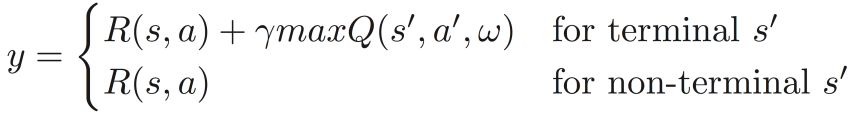
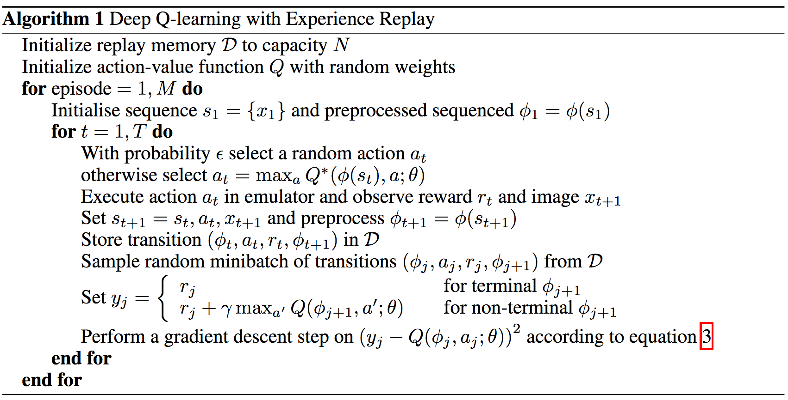
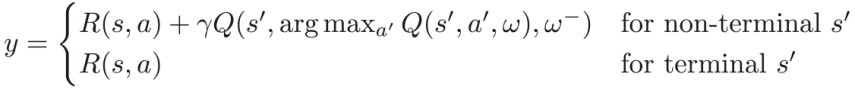
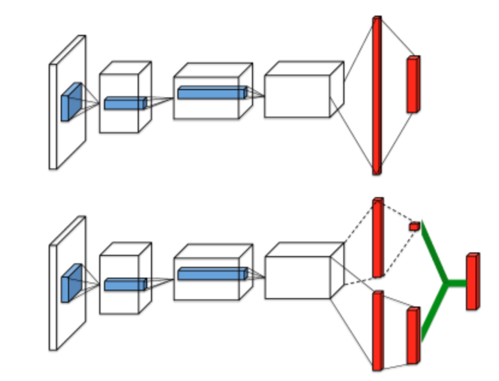

(二)基于价值的强化学习
一.q-learning算法
q-learning算法是经典的强化学习算法，是一种基于价值的算法。通过构造Q值表(Q-table，Q代表着行动的质量(quality))进行决策，Q值表中 的每个元素衡量了在给定状态s下采取给定行动a时将会获得的最大期望累计回报，因此agent可以根据Q值表去选择每个状态下的最优行动。
1.Q值表
Q值表的行表示环境中所有的状态，列表示在给定状态下可以采取的行动，可以把Q值表理解为游戏的作弊器，在游戏中的某个状 态下(Q值表中对应的那一行)，agent能够从作弊器中知道采取什么行动(当前行中最大值所对应的列)可以获得最大回报，因此只要获得了Q值表，就可以根据Q值表进行决策。
2.q-learning算法
初始Q值表的每个元素都被赋值为0，agent通过与环境的交互来获得信息(s，a，r，d)，并且根据这些交互信息利用Bellman方程迭代更新Q值表中的每个元素Q(s，a)。
接下来我们来介绍更新Q值表中的每个元素的流程，如图3所示。

图3 q-learning算法
(1)初始化Q值表
初始化所有的Q(s，a)为0，Q值表共有m行(m个状态)，n列(每个状态对应n个行动)。
(2)选择行动a
在当前状态s下基于当前的Q值表选择某个行动，此处我们将根据epsilon-greedy策略来选取行动。
首先，我们需要定义一个探索率，这个探索率将决定我们将以多大的概率随机选取一个行动。比如探索率取0.5，就意味着我们将以0.5的概率随机
选取一个行动，以0.5的概率根据当前的Q值表去选取一个Q值最大的行动。通常我们在游戏开始时选取探索率为1，这样我们的agent就会在所有Q值都
为0的情况下对环境开始进行探索。随着回合数的增加，我们需要降低探索率的取值，让agent以更大的概率去依赖Q值表选取行动。
(3)执行行动并获得奖励
在状态s下采取行动a，并从环境中获得下一个状态s’和奖励r，接下来我们将会利用r去更新Q(s，a)。
(4)更新Q值表中对应位置的Q值
利用Bellman方程更新Q(s，a)，如图4所示：

图4 Q值更新公式
式中左侧表示新的Q值；α表示学习率，学习率决定了我们以多快的速度更新原有的Q值，很显然，当学习率为1时，我们最快速的将原有
的Q值更新为新计算得到的Q值；R(s，a)表示在状态s处采取行动a所获得的奖励；γ表示折扣因子；maxQ’(s’，a’)表示下一个状态下所
能获得的最大期望未来回报。
(5)达到最大回合数后停止迭代
当agent死亡或者获得胜利时，算作一个回合结束，当agent进行了许多轮回合迭代更新后达到了我们给定的最大回合次数阈值时，我们认为agent已
经获得了一个迭代好的优秀的Q值表，接下来代理就可以利用这个计算好的Q值表来进行决策。
二.deep q-learning算法
上一部分介绍了最基本的基于价值的强化学习算法q-learning，我们可以很容易地看到，当agent所处的环境包含大量的状态时，继续 使用q-learning算法是不可行的，此时我们不可能对每个{状态，行动}对的Q值给出精确的估计，那么q-learning算法就失效了。为了 克服这种状态巨大，无法计算Q值表的局限，DeepMind提出DQN算法，利用深度学习模型代替Q值表来近似每个{状态，行动}对的Q值。DQN模型 以环境的当前状态作为输入，输出每个行动的Q值。
1.DQN算法
回忆上一节介绍的Bellman方程：
当α取1时，有
因此，我们可以利用Q-target(注：(2)式等号右边部分)作为模型的响应变量y，构建深度学习模型近似真实的Q值，记模型参数为ω，模型记为Q(s, a, ω)。
模型的损失函数为二次损失函数：
其中，响应变量为

在训练DQN模型时，需要初始化一个大小为N的记忆M。agent采用epsilon-greedy策略与环境进行交互，收集到的信息(st, at, rt, st+1)并
不直接对模型进行更新，而是将其存储到记忆M中。之后从记忆M中随机抽取一批样本{X, Y}，利用这批样本对DQN模型进行更新。记忆M的数据类型通常是deque，这意味着当数据量到达deque的容量时，旧的数据会被丢弃。
这种使用记忆M来存储agent与环境交互获得的信息的方法称为经验回放(experience replay)，其有以下几个好处：
- 采用经验回放可以重复利用每个样本多次，从而提高样本的利用效率
- 采用经验回放可以打破样本之间存在的关联性
- 采用经验回放可以防止agent忘记以前学过的知识
2.DQN算法伪代码
三.deep q-learning的改进算法
DQN算法中的响应变量如下所示：
在计算响应变量y时，计算maxQ(s', a', ω)所用到的模型是我们正在更新的模型Q(s, a, ω)，从而导致y和Q(s, a, ω)之间存在
很强的关联性。这种关联性将使y和Q(s, a, ω)出现同方向变动的情况，从而使得DQN的参数收敛速度变慢。
DQN基本算法中还存在另一个问题：高估Q值。我们在计算y值的时候，没有办法保证满足条件的行动是最优行动，原因是我们的DQN还未收敛，此时
的DQN还不能很好的近似Q值。agent使用DQN计算出来的Q值的准确程度和agent对状态空间的探索程度有很大关系，也和agent尝试过多少种行动
有很大关系。在训练开始的时候，由于我们获得的信息有限，agent并不清楚什么样的行动才是最优行动。此时，Q值最大的行动几乎不可能是最优
行动。如果agent每次选择拥有最大Q值的行动来执行的话，就可能对正确行动做出错误判断，这会让agent学习变得更加复杂。
为了解决DQN算法中存在的问题，一些新的改进算法因此产生。
1.Fixed Q-targets
使用固定Q-targets(Fixed Q-targets)方法解决y和Q(s, a, ω)之间的强相关问题。具体做法是构建两个深度学习模型，模型结构完 全一致，差别在于参数不同，记target网络的参数为ω-，value网络的参数为ω。使用target网络计算响应变量y，利用 记忆M中的批数据更新value网络，并且每当value网络更新T步时，将value网络的参数ω赋值给 target网络，即ω-=ω。这样就 可以降低y和Q(s, a, ω)之间的关联性，加快DQN参数的收敛速度。
2.Double DQNs
使用双DQN(Double DQNs)方法解决高估Q-value的问题。具体做法是构建两个深度学习模型，模型结构完全一致，差别在于参数不同，记target网络
的参数为ω-，value网络的参数为ω。在计算响应变量y时，首先使用value网络寻找最优行动a'，然后将最优行动带
入到target网络中计算得出响应变量y(注意这里计算y时与Fixed Q-targets方法的差别)，之后模型更新方式与Fixed Q-targets相同。响应变量y的计算公式为：

使用修改后的y的计算公式会让DQN的学习更加快速、稳定。
3.Dueling DQN
Q-value是agent处于状态s下采取行动a的好坏程度的一个度量。因此，可以将Q-value分解为以下两个数值的和：
：是一个标量，表示agent处于状态s时的价值(value)。
：是一个n维向量，n是在状态s下可采取的动作a的个数，每个分量表示在状态s下采取行动a的优势(advantage)。
我们需要对DQN模型的网络结构进行调整，如图5中下面的模型结构所示。使用聚合层(aggregation layer)把价值和优势结合起来，从而得到
估计的Q值。我们可以直接使用上式Q=A+V计算得到Q值，但是这个式子无法辨识最终输出里面V和A各自的作用，为了体现这种可辨识性，需要对
优势函数做中心化处理，即Q值计算公式改为：
这种分别计算V、A值的网络结构，可以大幅加速模型训练，同时还可以提高模型对Q-value估计的准确度。

图5 Dueling DQN网络结构
4.其他改进算法以及Rainbow
除了以上三种改进算法外，还有Prioritized Replay Buffer、Multi-Step Learning、Distributional DQN(Categorical DQN)、NoisyNet等算法。将上述所 有算法结合在一起，就形成了以DeepMind为首的基于价值的强化学习学派里的最强算法：Rainbow，感兴趣的读者可以查阅相关的参考文献。